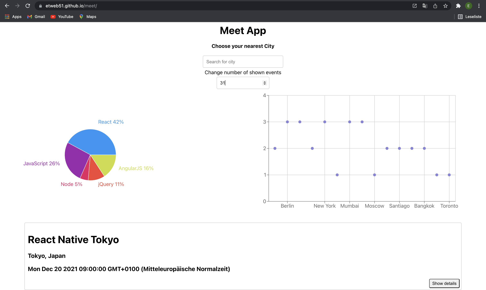

My work
Pokédex
A simple App, which uses an external API to get Information about the first generation of Pokémons. Built with HTML, CSS, JavaScript, Bootstrap and JQuery.
See project on GitHubSee projects website
Line


Line is a chat-app built with React Native, Expo, Gifted Chat and Google Firebase/Firestore. In addition to chat, the users can send pictures from their media library, take photos with their cameras and send their current location.
See project on GitHubMeet
A severless progressive-web-application (PWA), which built with React. It uses the Google Calender API to fetch and show upcoming events in certain cities areound the globe. It was built on a test-driven approach.
See project on GitHubSee projects website
myMovie API
The server-side of an web-application, which provides user information about movies, such as the genres, directors and descriptions. It also enables users to create their own account in order to create a list with their favorite movies. Built with Node.js, Express, MongoDB.
See project on GitHubmyMovie Angular Client
A client-side web-application built with Angular.
See project on GitHubSee projects website